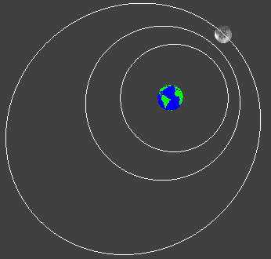

This is a simulation of the relative motion of translation of the Moon around the Earth, assuming that both bodies are spherical and that they are isolated in Universe.

Simulation adapted from the book (in Spanish)
Creación de Simulaciones Interactivas en Java.
Aplicación para la Enseñanza de las Ciencias.
F.
Esquembre
(C) Pearson Educación 2004.